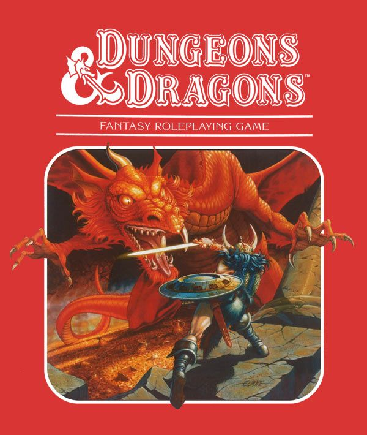
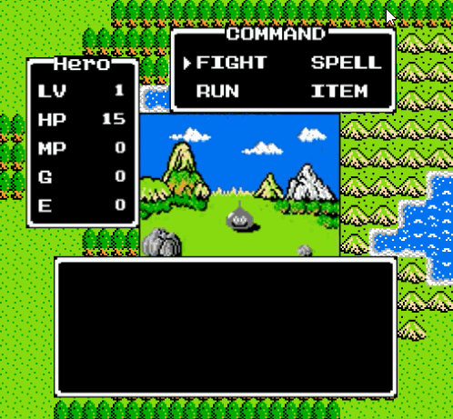
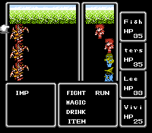
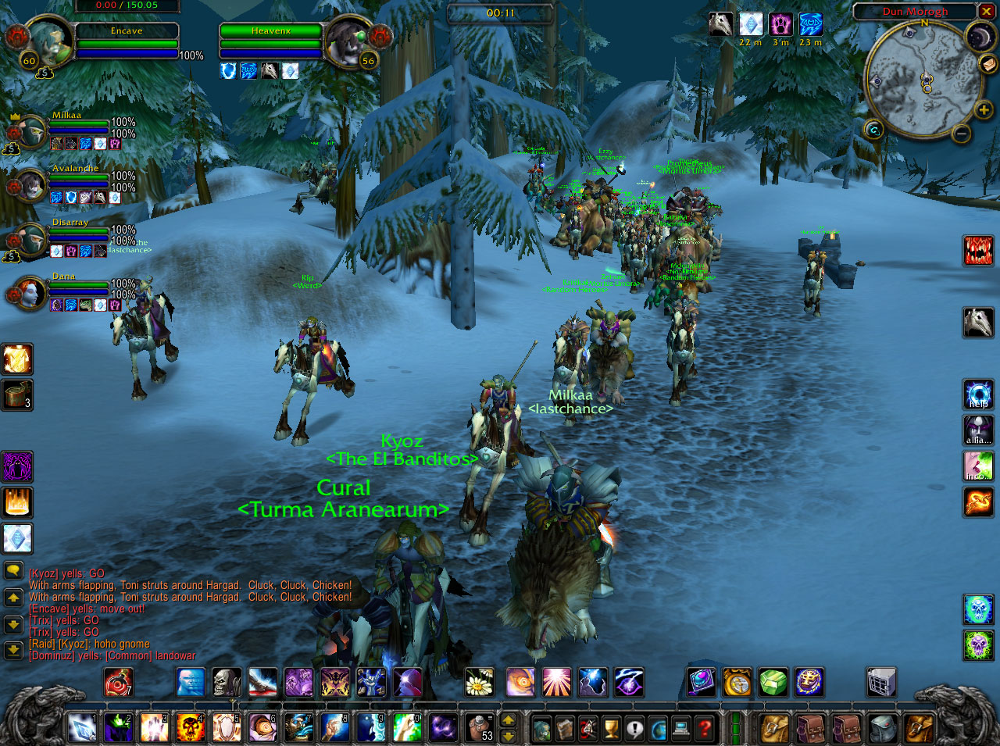

The RPG genre
Origins
In the mid 70's, table-top role-playing games were rising in popularity (mostly thanks to Dungeon&Dragons). This, together with the developments of the video games industry, led to the creation of role-playing video games.
This inspiration is clear when looking at the main characteristics of the genre: an immersive world to explore, with many different characters, items and locations; a plot (or 'quest')
to set a motivation or objective for the player to follow; a combat system that relies on many different attributes and mechanics (like character statistics, items, abilities, ...).
The combat in particular often features a gameplay loop where the playable character "wins to get stronger, gets stronger to win".
|  |
| Dungeon&Dragons |
Some of these genre's mechanics have become so common that are often used in non-rpgs and referred to as "rpg-elements"; one of the most well-known example is the leveling system, a "character-improvement" system based on gradually reaching new levels while progressing through the game, with each level granting an increase to certain attributes, new abilities, etc. To sum up, RPGs are mostly defined by a heavy focus on story-telling, worldbuilding and combat and can be further categorized by the type of gameplay (like "Action-RPGs"), the perspective (like "first-person RPGs") or other features (like "MMORPGs").
The RPG genre in the third generation
The technological progress of video game consoles allowed for more complex games. In particular the ability to save progress allowed developers to create and express more involving stories.
In the third generation this feature got more accessible and many games took advantage of it.
One of the first games to do so was The Legend of Zelda that, despite not being a RPG itself, it is often quoted as an inspiration for some RPGs at the time.
|  |
| Dragon Quest on NES |
Later three of the most important games of the generation were released: Dragon Quest, Final Fantasy and Phantasy Star; all of them first entries in their respective series.
These games popularized and the genre on thier own way, for example Dragon Quest (and Final Fantasy later) started to really popularize the genre in Japan
and Phantasy Star was one of the first rpgs to feature a sci-fi setting instead of the ususal fantasy setting.
|  |
| Final Fantasy on NES |
RPGs until then were usually only produced in the West and the different approach of eastern developers led to the classification of two types of RPG: "Western" RPG (also "WRPG") and "Japanese" or "Eastern" RPG (usually abbreviated "JRPG"). For example, JRPGs focus more on the story and the playable character(s) has(have) a set appearance and/or personality while WRPGs focus more on the immersion by giving the option of creating an "avatar" of the player in the game. Despite not actually representing the origin of the games they're describing anymore, this classification is still used today.
The evolution of the RPG genre in the following generations
RPGs continued to evolve in the following generations by adding new mechanics or developing existing ones while taking advantage of more powerful hardware.
For example series like Fallout and The Elder Scrolls offered more freedom on how to experience their world and their stories.
|  |
| World of Warcraft |
With the introduction of online multiplayer a new subgenre was created, the MMORPG ("Massively Multiplayer Online RPG"). Games like World of Warcraft
created entire communities of people playing with each other fro many years.
Nowadays the genre is still among the most popular, with many RPGs developed by both big software houses and little indipendent developers studios.
Sources
Left background image{kind=link}
Right background image
{kind=link}
Banner image
{kind=link}
Dungeons&Dragons image
{kind=link}
Dragon Quest gif
{kind=link}
Final Fantasy gif
{kind=link}
World of Warcraft image
{kind=link}